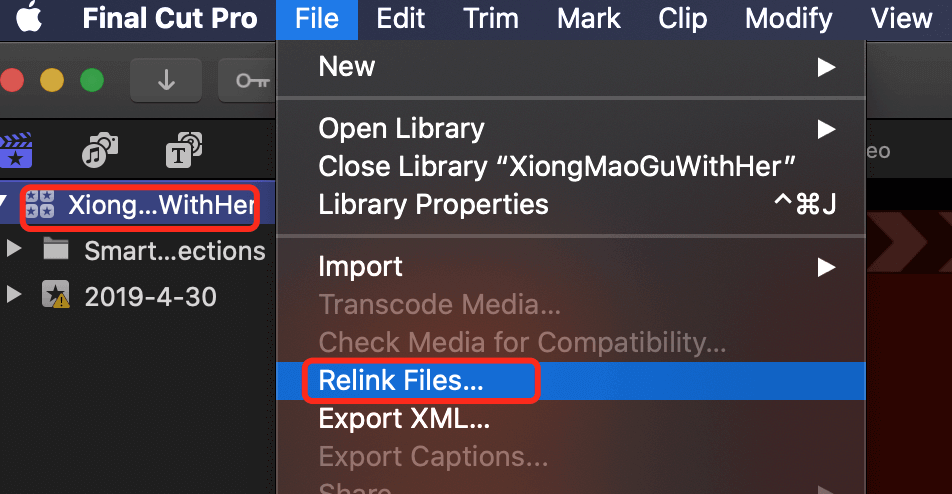

在 Final Cut Pro 中将片段重新链接到媒体文件
最近将存储盘目录重新整理了下，视频素材的路径和之前不一样了，导致 Final Cut Pro 项目打开后找不到媒体文件。可以在设置里重新链接文件到项目。
打开项目后，左侧资源库显示媒体文件丢失：
选中最上边的library名称，选择 file - relink files：

弹出的对话框会显示丢失文件列表，点击 locate all：
在弹出的对话框中找到当前项目需要的媒体文件所在文件夹并点击 open，返回后可以看到丢失文件列表已经清空，点击 relink files：
以上就完成了资源的重新 link，如果下方的 project 栏是空的，不用担心，在资源库滑动到最上方可以找到已经创建的 project：
双击 project 就可以打开项目了：
标签：无